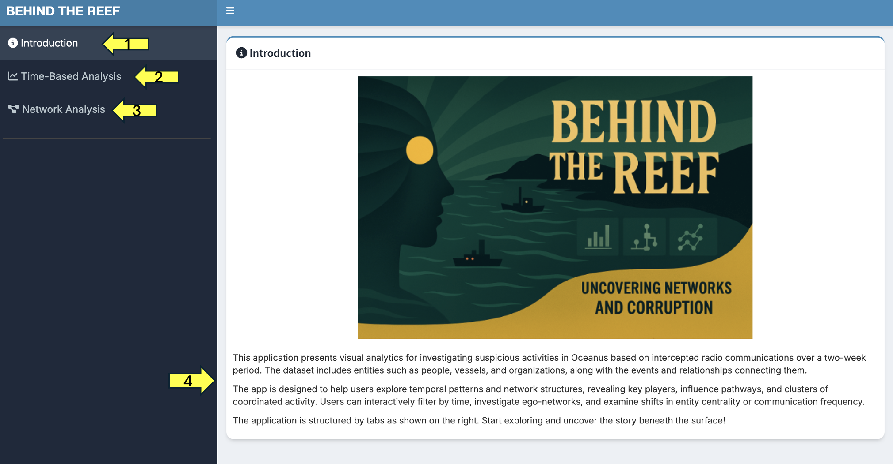
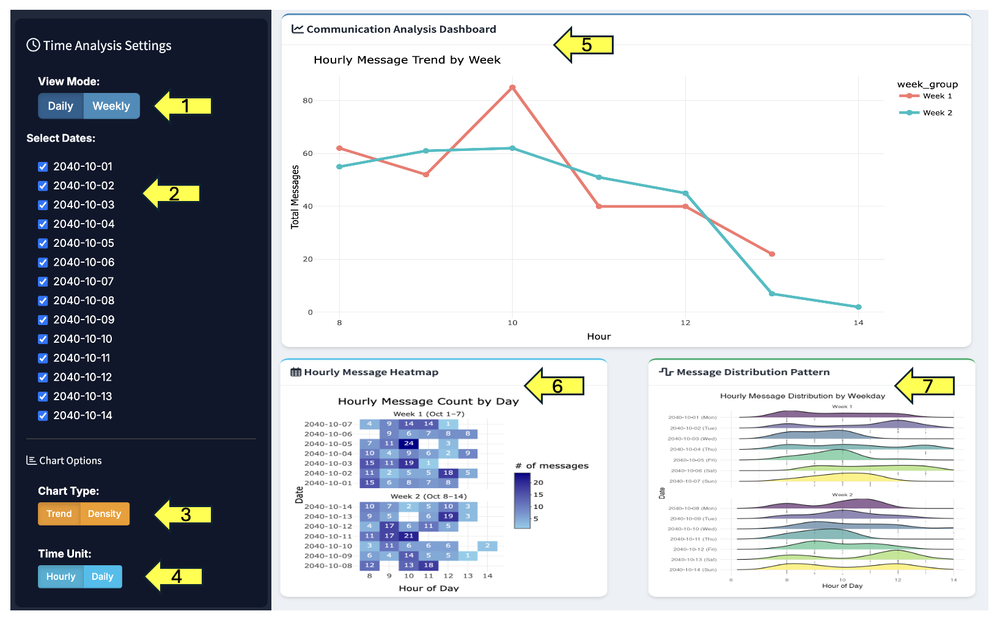
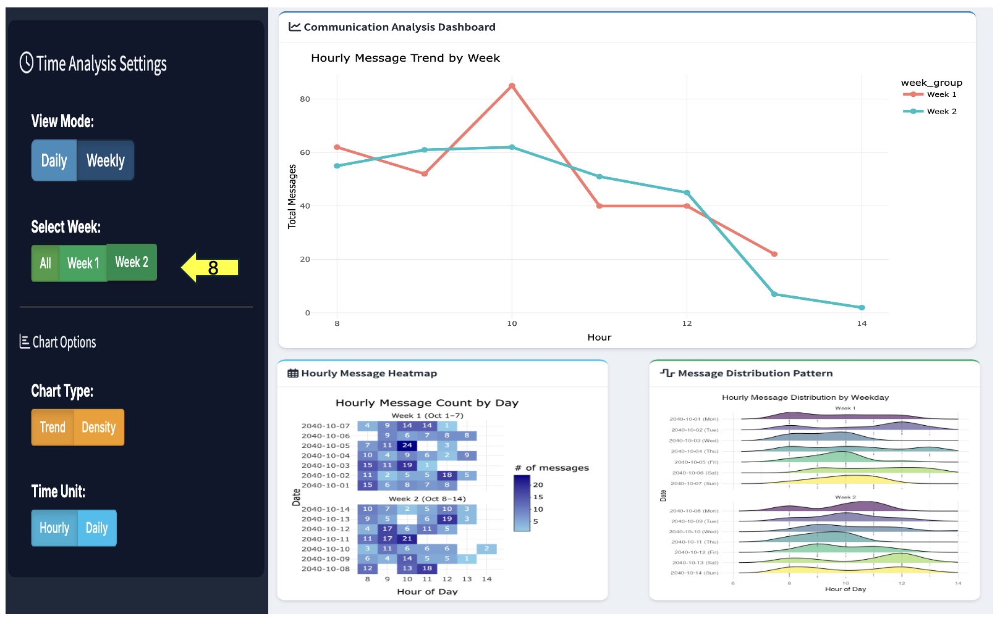

User Guide
1. Introduction Page
This page is the introduction section of our group’s Shiny App, providing a brief overview of the background and content of the visualizations.

[1] Tab for introduction page
- Click to navigate to the Introduction page.
[2] Tab for Time-Based Analysis page
- Click to navigate to the Time-Based Analysis page.
[3] Tab for Network Analysis page
- Click to navigate to the Network Analysis page.
[4] Content for introduction
2. Time-based Analysis
This section of the visualization focuses on analyzing the overall distribution and patterns of communications. Rather than targeting a specific entity, it aims to reveal insights into the total volume of communications, their time-based distribution, and comparisons across the two weeks. It includes a line chart at the top, followed by a calendar heatmap and a ridge plot.


[1] Overall Mode Selection
- Allows switching between weekly or daily mode, affecting all charts.
[2] Date Selection
- In daily mode, select specific dates, which applies to all charts.
[3] Chart Type Selection
- Applies to the upper line chart; choose to view either the communication trend or the communication density.
[4] Time Unit Selection
- Applies to the upper line chart; choose whether the chart is based on hourly or daily units.
[5] Line Chart
- Displays statistical indicators of overall communication activity, with options for different time units and chart types.
[6] Calendar Heatmap
- Shows the number of communications for each time slot on each day.
[7] Ridge Plot
- Shows the distribution of communication times for each day
[8] Week Selection
- In weekly mode, allows choosing between ALL, Week 1, or Week 2.
3. Network Analysis
3.1 Ego Network
Ego Network Interactive Graph
This interactive visualization helps explore the ego network of a selected entity (e.g., a person, organization, or vessel). The right panel displays a network graph centered on a chosen node, and the left panel contains control settings for customizing how the network is displayed. Node size reflects the centrality importance, and node color/shape indicates entity sub-types.

[1] Adjust the Network Depth to define how many layers of connections from the selected node should be visualized.
Depth 1 shows only direct connections.
Higher depths include more indirect links but may clutter the view.
[2] Select the Centrality Measure used to size and rank the nodes in the network.
PageRank highlights overall influence,
Degree reflects number of direct links,
Betweenness identifies nodes that act as bridges.
[3] Choose a Network Layout to determine how nodes are spatially arranged.
- Different layouts may better highlight clusters or communication paths depending on the structure of the data.
[4] Toggle “Show Global Network” if you want to view the entire network instead of just the ego network around the selected entity.
This can reveal broader patterns but may reduce clarity.
[5] Select the Entity of Interest whose ego network you want to explore.
The visualization will center around this node and show its connections based on the selected depth.
[6] Choose Influence Type (Maximum or Minimum) to filter the network based on the strength or importance of connections.
Maximum shows the most influential paths, while Minimum highlights the weakest.
[7] Use the “Select by ID” dropdown to directly filter and jump to a specific entity using its ID.
[8] Hover over any node to view its centrality score based on the selected metric, or click on a node to update the ego network centered around it.
Top Influential Entities Table
Located below the Ego Network graph, this table displays the most influential entities in the network based on selected centrality metrics. It allows users to compare key individuals, vessels, and organizations by their importance in the network structure.

[1] Adjust the number of rows shown using the dropdown to display more or fewer entries per page.
[2] Use the search bar to quickly locate specific entities by name or type (e.g., “Mako” or “Vessel”).
[3] Click on any column header (e.g., PageRank, Betweenness, Degree) to sort the table by that metric in ascending or descending order.
[4] Navigate between pages using the “Previous” and “Next” buttons to explore additional entries if available.
3.2 Relationship Network
This panel shows the complete connection network, where both entities (e.g., people, vessels) and relationships (e.g., “Friends”, “Reports”) are represented as nodes. Each relationship node connects two entities, forming a labeled and multi-typed network structure.

[1] Select Relationship Types to filter which relationship nodes are included in the graph. Unchecking a type removes all its associated relationship nodes and links.
[2] Select Entity Types to decide which kinds of entities appear (Person, Organization, Vessel, Group). Enabling all types gives a full view, but can result in a very dense graph.
[3] Use the “Select by ID” drop-down to search for and highlight a specific entity.
[4] Hover over any node to focus the graph on that node’s connections. Only the relationship nodes directly connected to the hovered entity will remain highlighted, helping isolate its role and associations.
3.3 Clustering Analysis
Clustering Graph
This panel reveals clusters of entities based on their communication patterns. Entities are grouped using a clustering algorithm, and each cluster is assigned a distinct color. This helps uncover tightly connected communities and potential alliances within the network.

[1] Select Entity Types to include in the clustering.
[2] Choose a Clustering Algorithm to determine how nodes are grouped.
Label Propagation detects communities by spreading labels between connected nodes, working well for loosely structured networks.
Louvain is based on modularity optimization and is effective for detecting well-defined, hierarchical communities.
[3] Set the Minimum Communication Frequency to filter weak connections. Only links with a number of messages equal to or above this threshold will be considered for clustering. This helps remove noise and focus on meaningful interactions.
[4] Use the “Select by ID” dropdown to find and highlight a specific node within the clustered network.
[5] Hover over any node to view its centrality metrics in a tooltip. The pop-up shows key statistics such as Degree, Betweenness, Closeness, and Eigenvector centrality, helping assess the node’s structural importance within the cluster.
Cluster Members Table
Located below the clustering graph, this table lists all detected clusters along with their corresponding entity members. It helps users view which individuals, vessels, organizations, or groups belong to each communication cluster.

[1] Adjust the number of rows shown using the dropdown to control how many clusters are displayed per page.
[2] Use the search bar to quickly find a specific entity or cluster by name. For example, typing “Elise” will show only the row containing her cluster.
[3] Navigate between pages using the “Previous” and “Next” buttons to view all cluster entries if the list spans multiple pages.